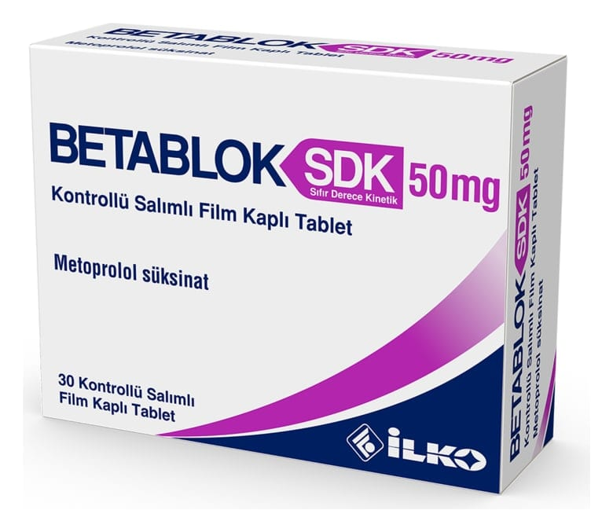

Betablok Sdk 50 mg Kontrollü Salımlı Film Tablet, 30 Adet

Ne için kullanılır
KT · Bölüm 1BETABLOK SDK homojen, beyaz renkli, yuvarlak, bikonveks, tek tarafı çentikli, film kaplı tablettir. Çentik çizgisi yutmayı kolaylaştırmak amacıyla tabletin kırılmasına olanak sağlamak içindir.
BETABLOK SDK 50 mg 20 veya 30 tabletlik ambalajlarda kullanıma sunulmaktadır.
Metoprolol fiziksel ve zihinsel çalışma dolayısıyla oluşan stres hormonlarının kalpteki etkisini azaltır. Bu sayede, bu koşullar altında kalp atım hızı (nabız azalır) yavaşlar. BETABLOK SDK aşağıdaki durumlarda kullanılır:
Yetişkinlerde: - Yüksek kan basıncını önlemek için
- Göğüs ağrısını (anjina pektoris) önlemek için - Kalp yetmezliğinde - Bazı çarpıntılarda - Düzensiz kalp aktivitesinin (aritmi) belirli türlerinde - Daha önce kalp krizi geçirmiş hastalarda daha sonraki kalp krizi riskini ve ölüm riskini azaltmada - Migren koruyucu tedavide
6-18 yaş arası çocuklar ve ergenler: - Yüksek kan basıncı tedavisinde